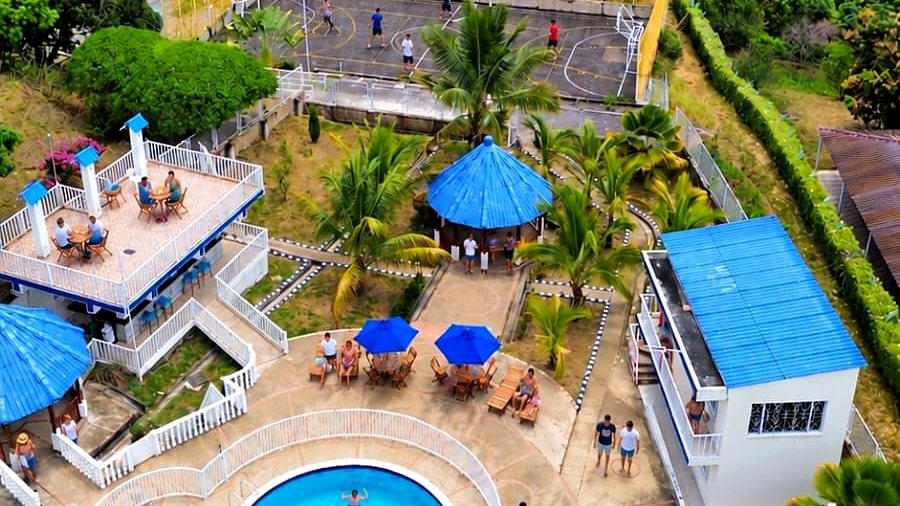

Cómo llegar a Hotel Cabaleón desde Bogotá: ruta a Tena, Cundinamarca
Unas dos horas de carretera separan el ruido de la ciudad del clima cálido de Tena. Esta guía te cuenta por dónde salir, qué esperar en el último tramo y cómo llegar sin afán a tu habitación.
Lectura de 6 minHotel Cabaleón
Si buscas un hotel campestre cerca de Bogotá para cambiar de clima sin pasar el fin de semana en la carretera, Tena es un destino ideal: en un par de horas pasas del frío de la Sabana al clima cálido, entre montañas y jardines. Así se llega a Hotel Cabaleón.
¿Dónde queda Hotel Cabaleón?
Hotel Cabaleón es un complejo turístico campestre ubicado en el Ramal de Escalante, vereda Escalante, en el municipio de Tena (Cundinamarca). Son 9.000 m² de jardines con vista a la Cordillera Oriental de los Andes, con 15 habitaciones y una cabaña, piscinas, jacuzzi, sauna, baño turco, gimnasio, Restaurante Mangolé y Cabalante Bar.
El clima es cálido durante el día, entre 24 °C y 28 °C, y fresco al caer la tarde: la combinación perfecta para pasar el día en la piscina y dormir con tranquilidad.
¿Por qué Tena para una escapada desde Bogotá?
Tena, en la provincia del Tequendama, es uno de los destinos de clima cálido más cercanos a la capital. En apenas un par de horas cambias el frío de la Sabana por días soleados, paisajes de montaña y noches frescas, sin necesidad de tomar un avión ni de pasar medio fin de semana en la carretera.
Hotel Cabaleón aprovecha ese entorno: está rodeado de montañas y jardines, con vista privilegiada hacia la Cordillera Oriental, y con solo 16 alojamientos cada huésped recibe una atención personalizada. Es un plan pensado para descansar, desconectarse y compartir en pareja, en familia o con amigos.
Rutas para llegar a Tena desde Bogotá
El trayecto toma unas 2 horas, según el tráfico al salir de la ciudad. Hay dos salidas habituales:
Saliendo por la Calle 13
Es la opción más directa si vienes del centro, del occidente o del sur de Bogotá. Una vez fuera de la ciudad, el camino baja hacia el clima cálido de la provincia del Tequendama.
Saliendo por la vía Mondoñedo
Es una buena alternativa según el punto de la ciudad desde el que salgas y el estado del tráfico ese día. Te recomendamos revisar en tu aplicación de mapas cuál de las dos rutas está más despejada antes de arrancar.
El último tramo: una vía veredal
Antes de la llegada, el camino se convierte en una vía veredal. Es un tramo sencillo, pero conviene recorrerlo con calma y, si es tu primera visita, llegar con luz de día. Así disfrutas el paisaje de montaña y llegas tranquilo a la entrada del hotel.
Si por algún motivo vas a llegar más tarde de lo previsto, escríbenos por WhatsApp y te esperamos.
Recomendaciones para un viaje tranquilo
- Sal con tiempo. La salida de Bogotá suele congestionarse los viernes en la tarde y antes de los puentes festivos; salir temprano te permite llegar con luz de día.
- Revisa la ruta antes de arrancar en tu aplicación de mapas y ten a mano el pin del hotel.
- Haz pausas si las necesitas, sobre todo si viajas con niños o con tu mascota.
- Conduce con calma en el último tramo, que es una vía veredal.
- Lleva tu medio de pago: el saldo de la reserva se paga al llegar, en efectivo o con tarjeta.
Horarios de llegada y salida
| Momento | Horario |
|---|---|
| Check-in | Desde las 3:00 p. m. |
| Check-out | Hasta las 2:00 p. m. |
| Zonas comunes después del check-out | Hasta las 4:00 p. m. |
| Desayuno (incluido) | 8:00 a 10:00 a. m. |
Es decir: aunque entregues la habitación a las 2:00 p. m., puedes seguir disfrutando de las piscinas y los jardines hasta las 4:00 p. m. antes de emprender el regreso a Bogotá.
Lista para antes de salir
- Confirma tu reserva y guarda el pin exacto que te enviamos por WhatsApp.
- Planea llegar después de las 3:00 p. m., hora del check-in, y en lo posible con luz de día.
- No te preocupes por dónde dejar el carro: el parqueadero es gratuito para los huéspedes.
- Empaca para clima cálido de día y fresco en la noche: te dejamos la lista completa en qué llevar a un fin de semana en clima cálido.
- Si viajas con tu mascota, recuerda que debes reservarlo antes: somos Pet Friendly en habitaciones seleccionadas.
Qué queda cerca del hotel
Hotel Cabaleón está en zona rural, rodeado de naturaleza, pero a poca distancia de varios centros urbanos de la región:
| Destino | Tiempo aproximado |
|---|---|
| La Gran Vía | 25 minutos |
| Mesitas del Colegio | 30 minutos |
| La Mesa | 40 minutos |
| Casco urbano de Tena | 50 minutos |
Por estar en zona rural, el centro de salud más cercano queda a unos 45 minutos. Si alguien del grupo necesita atención especial, cuéntanoslo al reservar.
Qué te espera al llegar
Parqueas sin costo, te reciben los anfitriones y no hay más trámite que ese. Las tarifas incluyen desayuno, impuestos, wifi, parqueadero y acceso a las piscinas y zonas verdes. Desde ahí, el plan lo eliges tú: piscina para adultos o infantil, jacuzzi, sauna, turco, cancha polideportiva, mini tejo, billar o simplemente una asoleadora frente a la cordillera. Te contamos cómo aprovecharlo en un día completo en Cabaleón.
Tu descanso comienza aquí
Elige fechas y habitaciones en nuestra página: ves tu factura al instante, con impuestos y desayuno incluidos, y confirmas con el anticipo del 50 % o el pago total. Directo con el hotel, sin intermediarios.
Preguntas frecuentes
¿Cuánto se demora el viaje de Bogotá a Hotel Cabaleón?
Unas 2 horas, saliendo por la Calle 13 o por la vía Mondoñedo, según el tráfico al salir de la ciudad.
¿Cómo encuentro la ubicación exacta del hotel?
Al confirmar tu reserva te enviamos el pin exacto por WhatsApp. También puedes buscar «Hotel Cabaleón» en Google Maps.
¿La vía hasta el hotel está pavimentada?
El último tramo antes de la llegada es una vía veredal. Es sencillo, pero recomendamos recorrerlo con calma y, la primera vez, con luz de día.
¿El hotel tiene parqueadero?
Sí, el parqueadero es gratuito para los huéspedes.
¿A qué hora es el check-in y el check-out?
El check-in es desde las 3:00 p. m. y el check-out hasta las 2:00 p. m.; después puedes seguir en las zonas comunes hasta las 4:00 p. m.
¿Qué pueblos quedan cerca de Hotel Cabaleón?
La Gran Vía queda a unos 25 minutos, Mesitas del Colegio a 30, La Mesa a 40 y el casco urbano de Tena a unos 50 minutos.
¿Qué pasa si llego tarde?
Escríbenos por WhatsApp y te esperamos. Aun así, la primera vez es más fácil llegar con luz de día por el último tramo de vía veredal.
Equipo de Hotel CabaleónComplejo turístico campestre en Tena, Cundinamarca. Publicado el .